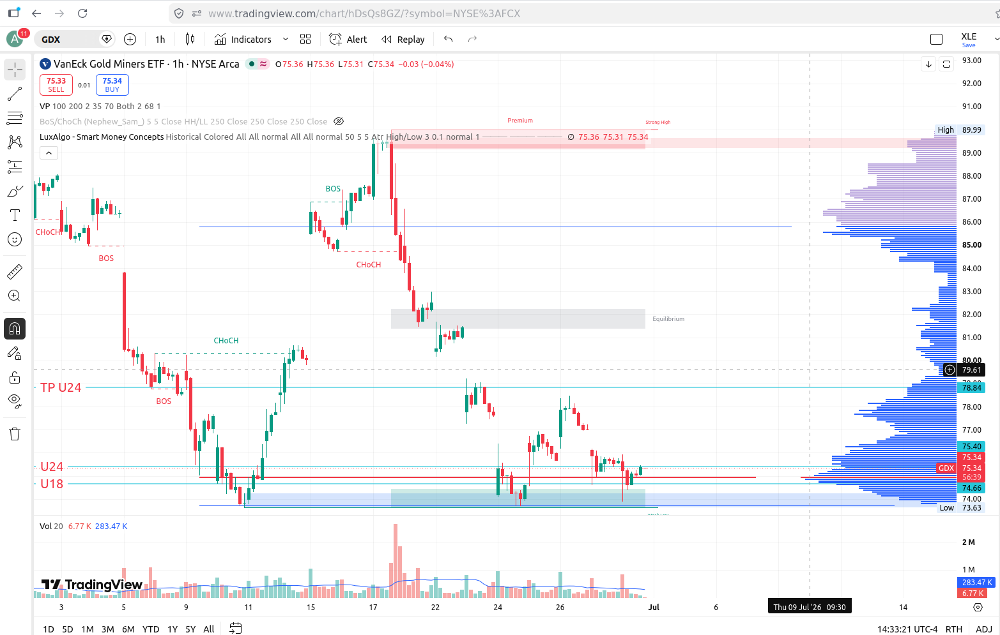
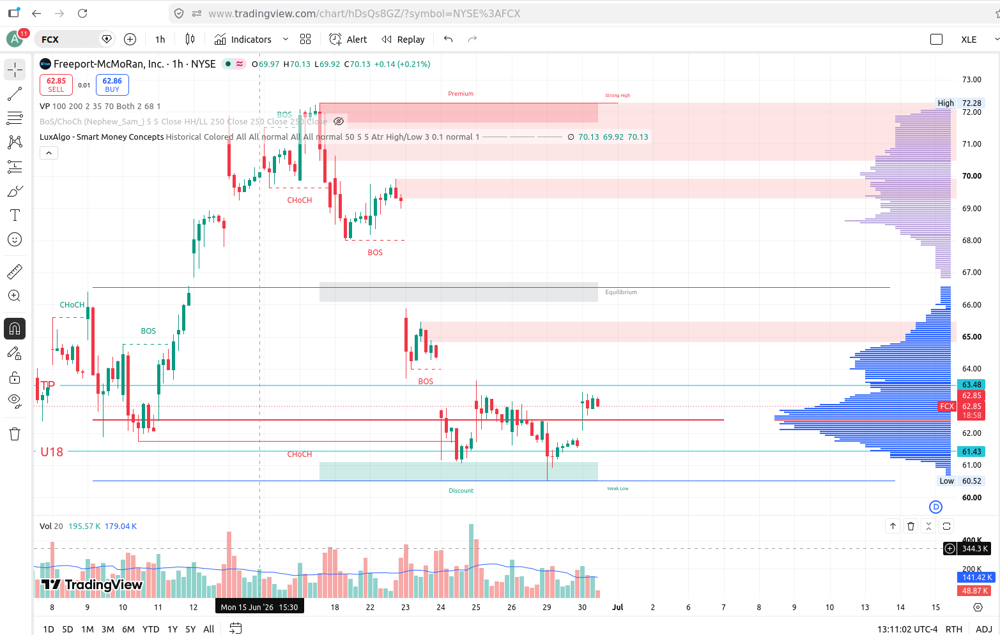

This archive indexes the published Market Fractal Notes. The homepage shows only the most recent notes to keep the main site readable. The full article set lives here as an internal GitHub Pages archive rather than an external GitHub repository link.
GDX: Dual-entry discount structure, cycle uncertainty, and short-horizon rotation management
Swing / 2-5 days
Market Fractal Notes is a personal investment journal where I document how market-cycle theory, risk allocation, volume distribution, behavioral market structure, and decision-making under uncertainty can be applied to real market positions.
This is not financial advice or a trading signal. The objective is not to predict the market, but to document a structured analytical process behind investment decisions.
This note analyzes GDX as a short-horizon rotation case built around a discount-zone structure with two separate entries: one aligned with U24 and another aligned with U18. Both positions are being evaluated within the same lower-range context, but they represent different entry efficiencies inside the same market idea.

GDX setup snapshot. The chart highlights the U24 and U18 entry references, the lower-cycle discount area, the projected TP U24 zone, and the volume-profile structure supporting the trade thesis.
From a market-structure perspective, GDX is trading near the lower part of the active range, below equilibrium, and inside a discount zone where prior interaction suggests potential stabilization. That does not eliminate uncertainty. On the contrary, the consumer or participant side of the cycle still reflects hesitation: price is not yet in a fully resolved expansion phase, so the setup should be interpreted as a controlled rotation attempt rather than an aggressive directional conviction trade.
Cycle Context
Stage of cycle: lower-range discount phase with unresolved sentiment. The structure favors tactical rebound logic, not a mature expansion assumption.
Entry Structure
U24 entry near 75.40 and U18 entry near 74.66 define two layers of exposure inside the same thesis, both located around the lower discount structure.
Expected Return
Using TP U24 near 78.84 as the reference, the expected move is roughly 4.6% from U24 and 5.6% from U18 over a short multi-day horizon.
Risk Level
Risk is moderate. Relative to the lower boundary around 73.63, downside is about 2.3% from U24 and 1.4% from U18, which keeps the structure favorable if sizing remains disciplined.
Decision logic remains explicit. If GDX continues to hold the discount zone and price accepts either U24 or U18 as support, then the position can remain open while waiting for rotation back toward the liquidity target. If price expands into the TP U24 area near 78.84, then capitalization becomes reasonable from a percentage-return perspective. If the lower structure fails, the position should not be interpreted mechanically as a prediction error alone; instead, the broader fractal must be reassessed, including whether the cycle has shifted from tactical rebound to deeper accumulation.
Why can GDX be favorable here? Because the stock is sitting in a zone where uncertainty is still elevated, but that same uncertainty creates asymmetry when price is already discounted relative to equilibrium and supported by visible volume concentration. In other words, the opportunity is not that the market is safe; it is that the relationship between downside distance, upside rotation potential, and cycle stage is currently acceptable for a small, disciplined swing allocation.
This note therefore reflects the same philosophy as the prior publication: process before prediction, limited exposure before conviction, and structured risk before narrative certainty.
Market Fractal Notes #001
FCX: Discount-Zone Rotation and Fractal Risk Management
Swing / 2-5 days
Market Fractal Notes is a personal investment journal where I document how market-cycle theory, risk allocation, volume distribution, behavioral market structure, and decision-making under uncertainty can be applied to real market positions.
This is not financial advice or a trading signal. The objective is not to predict the market, but to document a structured analytical process behind investment decisions.
This note analyzes FCX as a short-cycle rotation case. The position is based on price interaction with a lower-cycle discount area, supported by Volume Profile concentration near the lower range and prior cyclical behavior.

FCX setup snapshot. The chart highlights the lower-cycle discount area, the U18 reference zone, the projected TP or liquidity area, and the supporting volume-profile structure used in the note.
From a market-structure perspective, the asset is trading below equilibrium and near a zone where previous price interaction suggests potential demand absorption. In this context, the thesis is not that price must move upward, but that the current area offers a reasonable short-cycle rotation opportunity if liquidity starts moving back toward the upper range.
Cycle Context
FCX is being evaluated within a short-cycle structure. The setup is tactical rather than a long-term fundamental thesis.
Liquidity Zone
The position was initiated near the discount or U18 area, where price is interacting with the lower part of the range and the Volume Profile suggests relevant activity.
Behavioral Thesis
Discount zones often reflect uncertainty, short-term selling pressure, or temporary imbalance. The question is whether that pressure becomes continuation weakness or rotation back toward equilibrium.
Risk Framework
This strategy does not rely on a traditional stop-loss reaction. Risk is managed through sizing, capital allocation, time horizon, and fractal reassessment.
Decision logic remains explicit. If price holds near the discount or U18 area, the position stays open while waiting for a short-cycle rotation. If price rotates toward the TP or liquidity area around 63.4, capitalization becomes reasonable. If price breaks the local low, that is not treated automatically as a stop-loss event; the analysis shifts to a broader fractal and the time horizon extends. If the broader cycle deteriorates or capital becomes inefficiently locked, then the position must be reassessed from an opportunity-cost perspective.
The objective is modest: a controlled, short-cycle capitalization rather than a large directional bet. The value of this process is not in one single trade, but in documenting repeatable decision-making under uncertainty. This note reflects a capital-preservation approach built on limited exposure, structured reasoning, behavioral interpretation, and process over prediction.